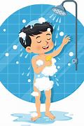

INGLES
GUIA DE TRABAJO – TALLER INTEGRADO I.E.D.E.M. ASIGNATURA: INGLES DOCENTE: RAUL CAÑAS
INSTRUCCIONES GENERALES
1. DESCARGUE EL DOCUMENTO Y CONSERVELO EN FORMATO DE WORD PARA SOLUCIONARLO.
2. LEA ATENTAMENTE LAS INSTRUCCIONES DE CADA UNA DE LAS ACTIVIDADES PARA RESOLVER APROPIADAMENTE.
3. RESUELVA EL TALLER EN ESTE MISMO DOCUMENTO AGREGANDO LAS PAGINAS QUE SEAN NECESARIAS PARA SU SOLUCION.
4. AL TERMINAR DE RESOLVER, PUBLICARLO EN SU PAGINA WEB PARA SU RESPECTIVA EVALUACION.
ACTIVITY 1: LEE Y TRADUCE CADA UNO DE LOS PARRAFOS QUE SE DAN EN LA LECTURA AS CONTINUACION.
Eating Disorders Eating disorders are so common in America that 1 or 2 out every 100 students will struggle with one. The most common types of eating disorder are anorexia nervosa and bulimia nervosa usually called simply “anorexia” and “bulimia”: But other food-related disorders, like binge eating disorders, body image disorders, and food phobias, are showing up more frequently than they used to.
Trastornos de la alimentación Los trastornos alimentarios son tan comunes en Estados Unidos que 1 o 2 de cada 100 estudiantes sufrirán luchar con uno. Los tipos más comunes de trastorno alimentario son la anorexia nerviosa y bulimia nerviosa (generalmente llamada simplemente “anorexia” y “bulimia”: pero otras enfermedades relacionadas con los alimentos trastornos, como los trastornos por atracón, los trastornos de la imagen corporal y las fobias a la comida, son apareciendo con más frecuencia que antes.

ANOREXIA People with anorexia have an extreme fear of weight gain and a distorted view of their body size and shape. As a result, they can’t maintain a normal body weight. Some people with anorexia restrict their food intake by dieting, or excessive exercise. They hardly eat at all – and the small amount of food they do eat becomes an obsession. Other people with eating disorders do something called binge eating and purging, where they eat a lot of food and then try to get rid of the calories by forcing themselves to vomit, using laxatives, or exercising excessively.
ANOREXIA Las personas con anorexia tienen un miedo extremo a ganar peso y una visión distorsionada de su tamaño y forma del cuerpo. Como resultado, no pueden mantener un peso corporal normal. Algunas personas con anorexia restringen su ingesta de alimentos mediante dietas o ejercicio excesivo. Casi no comen nada y la pequeña cantidad de comida que comen se convierte en una obsesión. Otras personas con trastornos alimentarios hacen algo llamado atracones y purgas, donde Comen mucha comida y luego intentan deshacerse de las calorías obligándose a vomitar. usar laxantes o hacer ejercicio excesivo.
BULIMIA Bulimia is similar to anorexia. With bulimia, a person binge eats (eats far too much food) and then tries to compensate it extreme ways, such as forced vomiting or excessive exercise, to prevent weight gain. Over time, these steps can be dangerous. To be diagnosed with bulimia, a person must be binging and purging regularly, at least twice a week for a couple of months. People with bulimia eat a large amount of food (often junk food) at once, usually in secret. The person typically feels powerless to stop eating and can only stop once he or she is too full to eat any more.
BULIMIA La bulimia es similar a la anorexia. Con bulimia, una persona come compulsivamente (come demasiada comida) y luego intenta compensarlo de formas extremas, como vómitos forzados o exceso ejercicio, para prevenir el aumento de peso. Con el tiempo, estos pasos pueden resultar peligrosos. Ser diagnosticada con bulimia, una persona debe darse atracones y purgarse regularmente, al menos dos veces al semana durante un par de meses. Las personas con bulimia comen una gran cantidad de comida (a menudo comida chatarra). comida) a la vez, generalmente en secreto. La persona normalmente se siente impotente para dejar de comer y sólo puede parar cuando esté demasiado lleno para comer más.

ACTIVITY 2: BUSCA UNA IMAGEN QUE PUEDA IDENTIFICAR CADA UNO DE LOS PARRAFOS DE LA LECTURA ANTERIOR Y AGREGALO EN LA SOLUCIÒN DEL TRABAJO PROPUESTO
ACTIVITY 3: RESUELVE EL CUESTIONARIO QUE SE DA A CONTINUACIÓN A PARTIR DE LA LECTURA.
A- Read the text and decide whether these sentences are true (T) or false (F). Correct the false ones.
1. A great number of American students will suffer from eating disorders. __T__
2. Anorexia and bulimia are the only food-related disorders. _F____
3. Anorexics like their body. ____F__
4. Some anorexics eat very little and do too much exercise. _T_____
5. Some bulimics try to lose their calories by exercising regularly. ___T___
B- Answer the following questions with complete sentences.
1. What are the symptoms of bulimia?
1R/-extreme concern over body weight or body shape.
-eating large quantities of food over a short period, often in secret.
-binge eating followed by self-induced vomiting; use of laxatives, diuretics, enemas or suppositories; fasting or severe dieting; or excessive exercise.
2. When can we say that a person suffers from bulimia?
2R/To be diagnosed with bulimia, also called bulimia nervosa, you must have bingeing and purging episodes at least once a week for 3 months. Bulimia tends to start in late childhood or early adulthood. People with the disorder can be any size, but their self-esteem is closely tied to their body image.
3. Why do bulimics eat so much?
3R/Like all eating disorders, bulimia is a serious illness. It can permanently damage your body and can even be deadly. People with bulimia will often eat large amounts of food, or binge, and then try to get rid of the calories in what is called a purge. This often involves vomiting, excessive exercising, or abuse of laxatives or diuretics.
ACTIVITY 4: COMPLETA EL SIGUIENTE CUADRO CON LA INFORMACIÒN QUE SE PIDE: ESCRIBE EN CADA CASO TRES SUGERENCIAS APLICANDO LAS EXPRESIONES: SHOULD – SHOULDN’T / HOW ABOUT…? / WHY DON`T YOU…? PARA EXPRESAR LA POSIBLE SOLUCIÒN A CADA UNA DE ESTAS SITUACIONES DE SALUD.
UTILIZA VOCABULARIO Y EXPRESIONES ESTUDIADAS Y TRABAJADAS EN CLASE
EATIN DISORDERS:
AR/Why don't you take some therapy?
BR/You should go to the hospital.
CR/how about going to the doctor?
ANOREXIA:
AR/why dont you Encourage healthy eating habits?
BR/You should seek professional help.
CR/how about going to the psychologist?
BULIMIA:
AR/why don't you get the right nutrition?
BR/you should follow your treatment plan and don't skip therapy sessions.
CR/How about going to eat healthy food?
ACTIVITY 5: ELABORA UNA LISTA DE 12 HABITOS SALUDABLES Y NO SALUDABLES CON SU RESPECTIVA IMAGEN. LUEGO ESCRIBE PARA CADA UNO UNA SUGERENCIA APLICANDO LAS EXPRESIONES: SHOULD – SHOULDN’T / HOWABOUT…? / WHY DON`T YOU.
5R/12 HABITOS:
1.DRINK WATER

-WE SHOULD DRINK WATER BECAUSE IT IS NECESSARY AND IMPORTANT FOR OUR HEALTH.
-HOW ABOUT DRINKING WATER FOR HAVING A BETTER HEALTH?
-WHY DON’T YOU DRINK WATER TO HAVE GOOD HEALTH?
2.EAT FRUITS AND VEGETABLES
-YOU SHOULD EAT FRUITS AND VEGETABLES ALL DAYS
-HOW ABOUT EAT FRUITS AND VEGETABLES FOR OUR BODY
-WHY DONT BUY MORE FRUITS AND VEGETABLES FOR THE DINNER
3.SLEEP WELL
-THEY SHOULD SLEEP WELL BECAUSE HELPS REST THE BODY
-HOW ABOUT SLEEP WELL TO FEELING REFRESHED
-WHY DONT SLEEP WELL TO HAVE MORE ENERGY
4.BRUSH YOUR TEETH
-You should brush your teeth for better mouth breath
-How about brush your teeth for whiter teeth
-Why Don't Brush Your Teeth for Healthier Teeth
5.WASH YOUR HANDS
-YOU SHOULD WASH YOUR HANDS TO AVOID ILLNESS
-HOW ABOUT WASH YOUR HANDS BEFORE THE DINNER
-WHY DONT WASH YOUR HANDS FOR BETTER HYGIENE
6.DO EXERCISE
-YOU SHOULD DO EXERCISE ALL DAYS
-HOW ABOUT DO MORE EXERCISE FOR A BETTER HEALTH
-Why Don't Exercise More for Better Fitness
7.BATHE

-you should bathe for a better hair
-how about bathe to relax
-why dont bathe for your body
8.taking care of mental health
-You should take care of your mental health to have self-control
-how about take care of your mental healt to have confidence
-why dont take care of your mental health to have self-esteem
9.read books
-You should read books because it develops your mental capacity
-how about read books to build your vocabulary
-why dont read more books to develop your ability to analyze situations
10.Playing sports
-You should play sports to see the perimeter better
-how about to play deports with your friends
-why dont play deports with your family
11.write
-You should write to improve your handwriting.
-how about to write a book.
-why dont write a letter.
12.Cutting your nails.
-You should cut your nails to prevent disease.
-How about Cutting Your Nails for Good Personal Hygiene.
-Why don't cut your nails like a hobby.